Controllability factorization
CF-JEPA builds on the LeWM world model. The encoder \(f\) maps an observation \(x_t\) to a latent \(z_t=[z^c_t, z^u_t]\). An action-conditioned predictor \(g\) advances the controllable part, while an action-free predictor \(h\) advances the uncontrollable part. An inverse-dynamics head \(\psi\) forces \(z^c\) to carry action-relevant information; an adversarial head \(\phi\) (with a gradient-reversal layer) prevents \(z^u\) from predicting actions. A SIGReg term keeps the latent from collapsing.
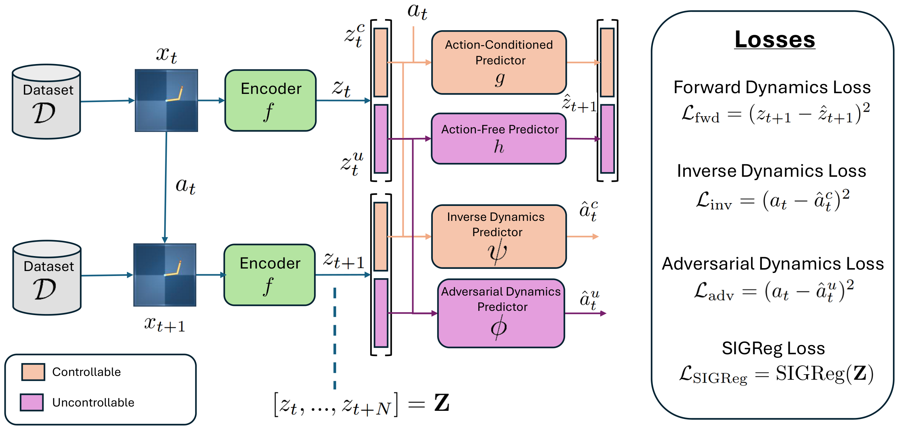
The full objective combines forward prediction, inverse dynamics on \(z^c\), an adversarial term on \(z^u\), and the SIGReg regularizer:
$$\mathcal{L}=\mathcal{L}_{\text{fwd}} + \alpha\,\mathcal{L}_{\text{inv}} + \beta\,\mathcal{L}_{\text{adv}} + \gamma\,\mathcal{L}_{\text{SIGReg}}$$
with \(\alpha=1\) and \(\gamma=0.09\) fixed for all tasks, and \(\beta\) the single per-task tuned weight. At planning time, model-predictive control (CEM) optimizes actions using only the controllable latent \(z^c\).
Tasks & visual distractors
We evaluate on four control tasks — DM Control Reacher, PushT, OGBench Cube, and TwoRoom — plus a simulated ManiSkill robot reach. Robustness is stress-tested by adding \(N\) moving colored rectangles that drift along the image edges without occluding the task.
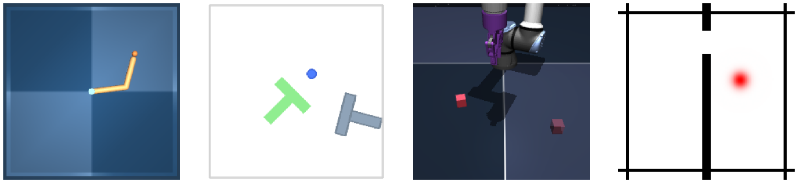
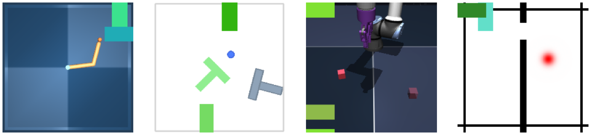
Robust where baselines collapse
Under nominal conditions CF-JEPA is competitive with LeWM and SMWM. Once distractors are added, LeWM collapses on all tasks and SMWM collapses on Reacher — CF-JEPA is the only model that never collapses. Values are success rate (higher is better); CF-JEPA is reported as mean ± std over three seeds.
| Task | LeWM | SMWM | CF-JEPA |
|---|---|---|---|
| Reacher | 0.86 | 0.66 | 0.61 ±0.03 |
| PushT | 0.96 | 0.83 | 0.78 ±0.04 |
| OGBench Cube | 0.74 | 0.84 | 0.81 ±0.03 |
| TwoRoom | 0.87 | 0.99 | 0.95 ±0.04 |
| Task | LeWM | SMWM | CF-JEPA |
|---|---|---|---|
| Reacher | 0.07 ±0.05 | 0.10 ±0.03 | 0.48 ±0.12 |
| PushT | 0.01 ±0.01 | 0.86 ±0.02 | 0.87 ±0.03 |
| OGBench Cube | 0.42 ±0.02 | 0.84 ±0.01 | 0.85 ±0.02 |
| TwoRoom | 0.33 ±0.03 | 0.98 ±0.05 | 0.95 ±0.03 |
| Task | \(N\) | LeWM | SMWM | CF-JEPA |
|---|---|---|---|---|
| Reacher | 2 | 0.08 | 0.10 ±0.03 | 0.48 ±0.12 |
| PushT | 2 | 0.01 | 0.86 ±0.02 | 0.87 ±0.03 |
| 16 | — | 0.36 ±0.36 | 0.76 | |
| 32 | — | 0.57 ±0.01 | 0.68 ±0.06 | |
| 64 | — | 0.27 ±0.25 | 0.57 ±0.01 | |
| OGBench Cube | 2 | 0.41 | 0.84 ±0.01 | 0.85 ±0.02 |
| 32 | — | 0.80 ±0.02 | 0.81 ±0.01 | |
| 64 | — | 0.70 ±0.05 | 0.73 ±0.01 | |
| 128 | — | 0.73 ±0.05 | 0.70 ±0.02 | |
| TwoRoom | 2 | 0.34 ±0.05 | 0.98 ±0.05 | 0.95 ±0.03 |
| 8 | — | 1.00 ±0.00 | 0.97 ±0.01 | |
| 16 | — | 0.60 ±0.28 | 0.94 ±0.00 | |
| 32 | — | 0.46 ±0.12 | 0.82 ±0.00 |
Planning rollouts under distractors
Rollouts on Reacher with distractors (\(N=2\)). CF-JEPA reaches the target; both LeWM and SMWM collapse and lose track of the arm.
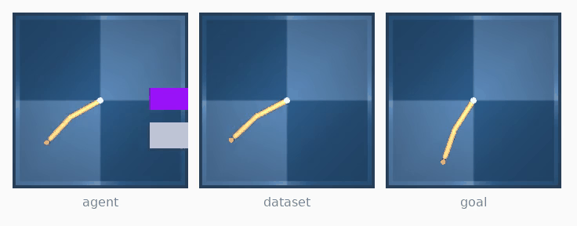
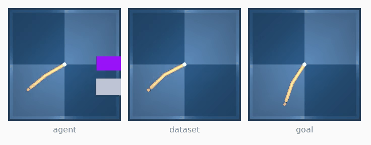
Increasing distractor density on PushT (\(N=16\)): CF-JEPA holds up, while SMWM fails.
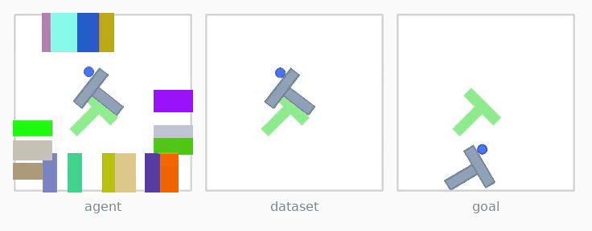
What each subspace remembers
Decoding frozen encoders (trained with distractors) back to pixels on clean Reacher frames shows the factorization at work: CF-JEPA's controllable latent \(z^c\) reconstructs the arm, its uncontrollable latent \(z^u\) does not, and both baselines have lost the agent entirely to collapse.
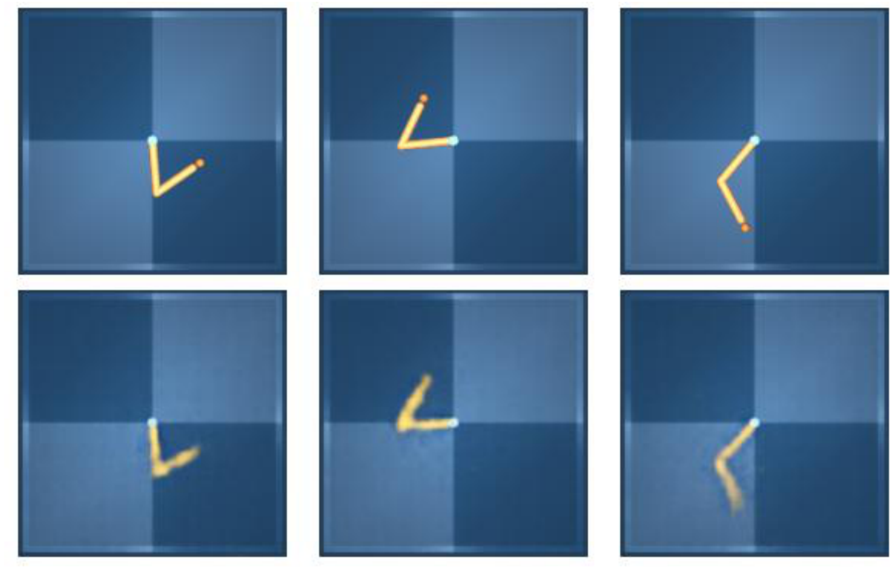
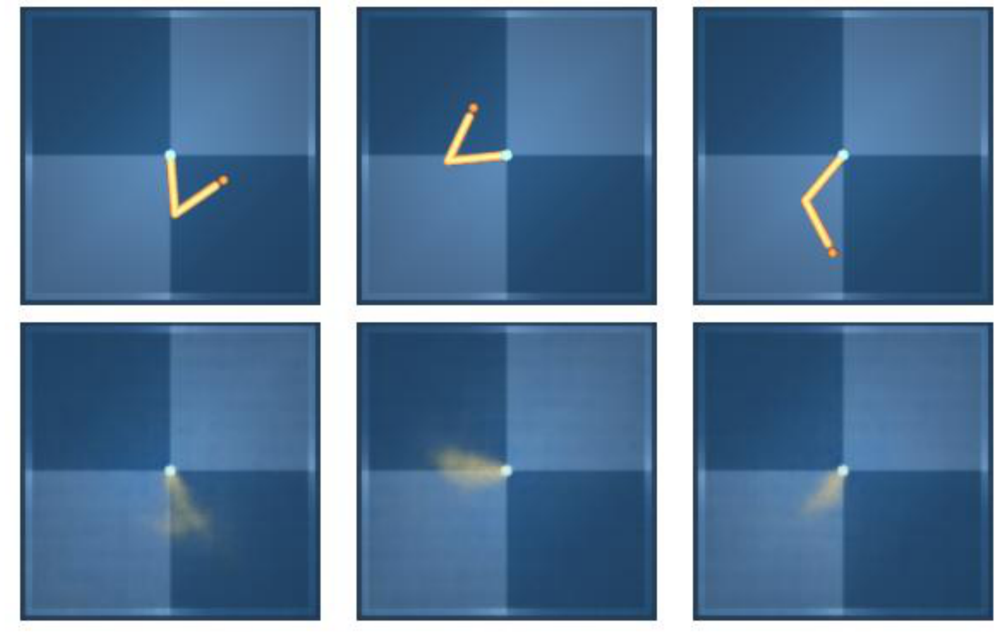
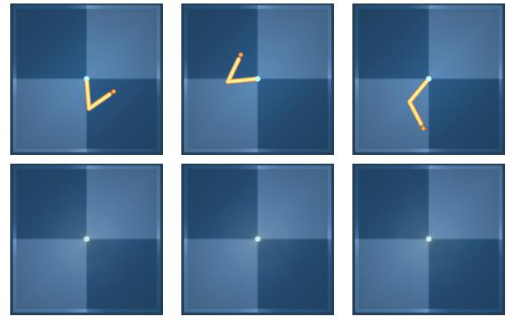
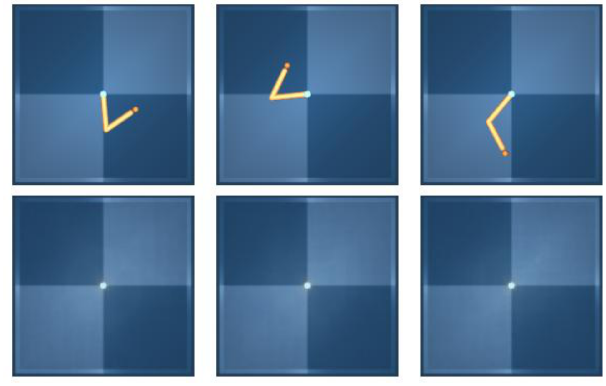
We quantify collapse with the participation ratio of the latent, computed from the eigenvalues \(\lambda_i\) of the embedding covariance over 256 random frames — a higher value means variance is spread across more dimensions, while total collapse drives it to 1:
$$\mathrm{PR}=\frac{\left(\sum_{i=1}^{d}\lambda_i\right)^{2}}{\sum_{i=1}^{d}\lambda_i^{2}}$$
| Condition | LeWM | SMWM | CF-JEPA |
|---|---|---|---|
| Nominal | 48.2 ±0.8 | 3.71 ±0.07 | 42.3 ±0.1 |
| Distractor (\(N=2\)) | 2.24 ±0.23 | 1.00 ±0.01 | 12.9 ±0.35 |
Perception-dependent ManiSkill reach
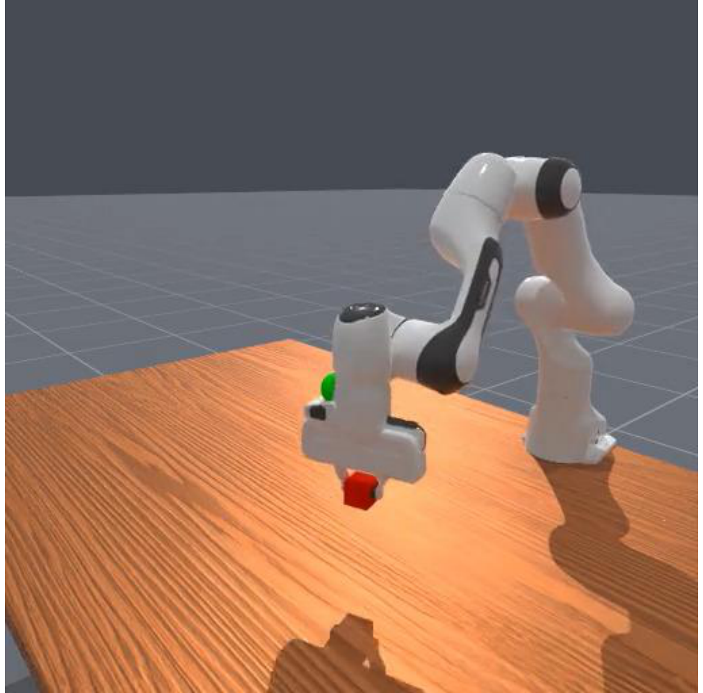
| Threshold (m) | LeWM | SMWM | CF-JEPA |
|---|---|---|---|
| 0.06 (easiest) | 0.55 ±0.04 | 0.79 ±0.05 | 0.83 ±0.06 |
| 0.05 | 0.51 ±0.05 | 0.62 ±0.04 | 0.72 ±0.08 |
| 0.04 | 0.44 ±0.03 | 0.58 ±0.02 | 0.64 ±0.10 |
| 0.03 | 0.36 ±0.03 | 0.38 ±0.02 | 0.53 ±0.14 |
| 0.025 | 0.32 ±0.06 | 0.30 ±0.04 | 0.48 ±0.17 |
| 0.02 (hardest) | 0.21 ±0.05 | 0.22 ±0.04 | 0.35 ±0.12 |